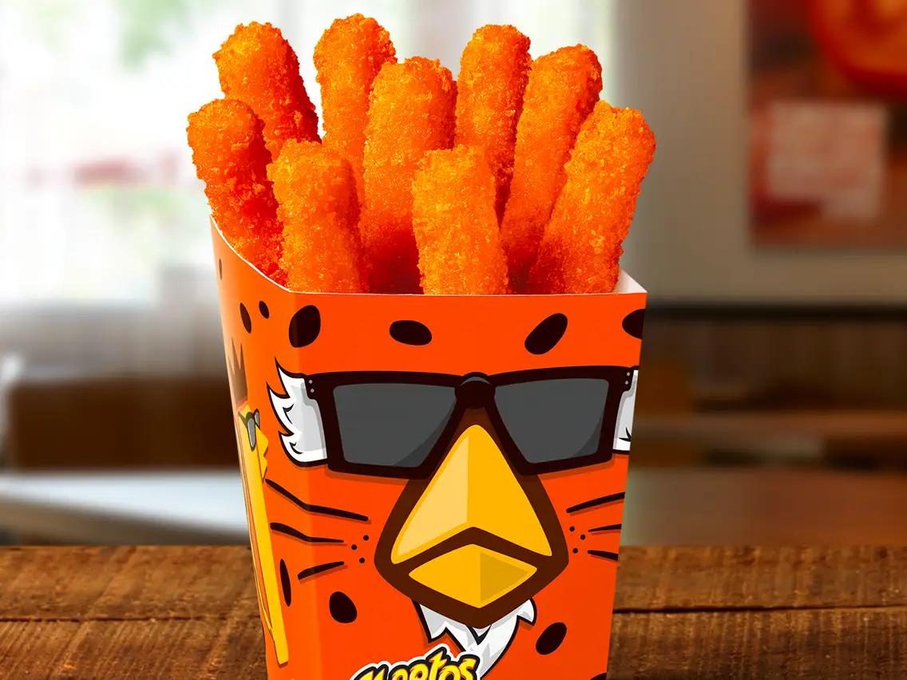

Cheeto Chicken

Description
I made this Flamin' Hot Cheetos fried chicken one day, when I
thought, I use Flamin’ Hot Cheetos to bread fried pickles and onion
rings, so why not fried chicken? They lose a lot of heat during the
process, so don't skip the cayenne pepper.
Ingredients
-
6 cups cheese puffs, such as CHEETOS® Crunchy FLAMIN’ HOT®
Cheese Flavored Snacks
- 1 teaspoon cayenne pepper
- 1/2 teaspoon salt
- 1 pound chicken breast tenderloins (about 8 pieces)
- 1/4 cup mayonnaise
- 2 tablespoons vegetable oil
Steps
-
Place Cheetos in a blender and pulse until fine crumbs. Pour
crumbs into a 1-gallon resealable plastic bag. Add cayenne and
salt. Seal the bag and shake to combine.
-
Place chicken tenders in a 1-quart resealable plastic bag. Add
mayonnaise. Seal the bag and massage chicken in mayonnaise until
evenly coated.
-
Transfer 2 chicken tenders from their bag to the bag with Cheeto
crumbs. Seal the bag and shake until evenly coated. Place
tenders on a plate. Repeat with remaining tenders.
-
Heat oil in a skillet over medium high heat. Add breaded chicken
tenders in a single layer and cook for 6 minutes. Using a
spatula, flip tenders over and cook until tenders are no longer
pink in the center and the juices run clear, about 6 minutes
more. An instant-read thermometer inserted into the center
should read at least 165 degrees F (74 degrees C).
-
Enjoy!